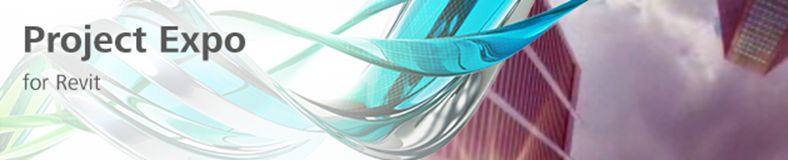

Stingray and Project Expo for Architects
Stingray
Stingray is live!
Stingray is a 3D game engine and real-time rendering software optimised for developers creating 3D games and design professionals creating real-time visualizations and visually stunning 3D experiences.
That is not all, though.
Project Expo
Based on this new technology, Autodesk Labs now publicly provides Project Expo for free.

Project Expo provides the ability to explore your design and communicate design intent in a compelling real-time environment, supporting architects and other designers in sharing and experiencing architectural designs with clients, going way beyond drawings and videos.
This significantly helps tell your story and convey your message to your stakeholders.
Project Expo leverages Autodesk’s powerful new game engine, Stingray, and puts it to use for professionals in Architecture, Engineering, and Construction. It is based on a cloud service, making the conversion from BIM to real-time automatic and simple as the click of a button.
Join Project Expo and try it for yourself at projectexpo.autodesk.com.
We would love to hear from you if you want to integrate immersive visualization into your design process to find out how we can further improve this technology.
You can reach us at labs.expo@autodesk.com or in the discussion forums associated with the project.
Architectural immersion is alive in the lab.